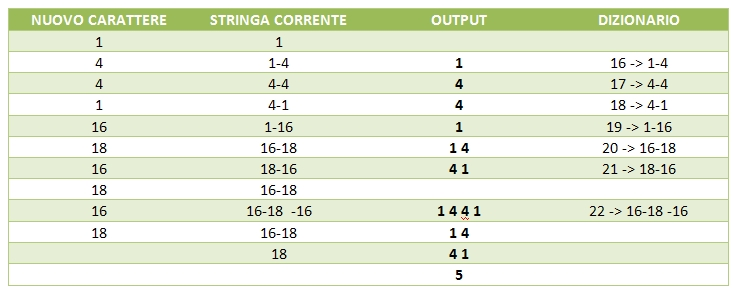
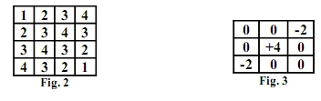

Torna alla pagina di Elaborazione delle Immagini
:: Appello d'esame di Elaborazione delle Immagini - 12/09/2007 ::
Esercizio 1
Le immagini rappresentate in A e in B di una scena sono riprese da una coppia di telecamere stereo. L’oggetto (testa) 3D è illuminato da un laser che forma una linea continua. Proporre un metodo per trovare la posizione (cioè l’insieme delle coordinate (x,y) dei pixel) della luce laser sulle immagini.
SOLUZIONE
Nello spazio RGB si ottengono i risultati migliori nel processo di segmentazione, perché dato un insieme di punti campione rappresentativo dei colori di interesse è possibile ottenere una stima del colore medio che si vuole segmentare. Ogni pixel RGB viene quindi classificato come appartenente alla gamma specificata o al di fuori di essa; per poter fare questo confronto bisogna utilizzare una misura di similarità ed in questo caso si utilizza la distanza euclidea.
Siccome conosciamo la natura della luce e quindi i suoi valori di intensità potremmo effettuare del color slicing per separare la gamma di colori che ci interessa (quella della linea) da tutto il resto, cioè la testa e lo sfondo che hanno valori di intensità completamente diversi. La regione definita dai colori possiamo utilizzarla come maschera per ulteriori elaborazioni.
Esercizio 2
Data la decodifica LZW (con 32 parole di dizionario) seguente, si ricostruisca l'immagine 4x4 a 16 livelli di grigio che è rappresentata:
1 4 4 1 16 18 16 18 16 18
Trovata l'immagine ricodificarla secondo Huffman. Calcolare i due rapporti di compressione.
SOLUZIONE
La tabella riporta la decodifica LZW:

L'immagine quindi ha la forma
1 4 4 1
1 4 4 1
1 4 4 1
1 4 4 1
Partendo dall'immagine avremo che la codifica di Huffman è la seguente:
le probabilità dei due livelli di intensità sono uguali, infatti
p(1) = 8/16 = 0.5
p(4) = 8/16 = 0.5
a1 1 0.5 1
a2 4 0.5 0
Anche se il tutto sembra moolto strano e sospetto ci si può aspettare una cosa del genere dal prof. Sassi, quindi procediamo con i rapporti di compressione.
C = b/b' dove b è l'immagine originale e b' l'immagine compressa.
In entrambi i casi abbiamo utilizzato lo stesso numero di bit per rappresentare ogni pixel dell'immagine compressa, quindi non è necessario calcolare il numero L medio di bit utilizzati per rappresentare l'immagine, ma possiamo utilizzare il numero di bit costante:
LZW 4*4*4/4*4*5 = 64/80 = 0.8
HUFFMAN 4*4*4/4*4*1 = 64/16 = 4
Al numeratore abbiamo 4*4*4 perché le dimensioni dell'immagine sono 4*4 e la considera a 16 livelli di grigio, quindi L=24.
Il denominatore con LZW ha 5 perché utilizziamo un dizionario da 32 parole; mentre in Huffman per codificare entrambi i simboli viene utilizzato un unico bit.
La cosa PUZZA, però così è. Chi trova un eventuale errore lo corregga.
Esercizio 3
Descrivere la trasformata di Hough e le sue applicazioni.
SOLUZIONE
La trasformata di Hough viene utilizzata nel processo di edge linking perché permette di individuare i punti che si trovano su linee rette.
Sappiamo che da un punto (xi, yi) nel piano xy passano infinite rette che soddisfano l'equazione yi=axi+b al variare di a e b. Se ora cambiamo piano e passiamo a quello ab chiamato spazio dei parametri otteniamo la seguente equazione: b=-axi+yi che rappresenta una singola retta passante per il punto (xi, yi).
Se adesso consideriamo un secondo punto (xj, yj) che nello spazio dei parametri interseca la retta associata al punto (xi, yi) nel punto (a', b'), abbiamo che questi due punti nel piano xy giacciono sulla stessa retta.

Quindi per tutti i punti che passano per la stessa retta nel piano xy passano infinite rette nello spazio dei parametri che si intersecano nel punto (a', b').
Le rette nel piano xy possono essere identificate individuando i punti nello spazio dei parametri in cui si interseca il maggiore numero di rette.
Il problema è che quando la retta si avvicina alla direzione verticale, a tende all'infinito, quindi conviene cambiare rappresentazione utilizzando la seguente equazione: xcosθ+ysinθ = ρ

Ora ogni curva sinusoidale rappresenta l'insieme delle linee che passano per un particolare punto (x,y) nel piano xy. Il punto di intersezione (ρ',θ') corrisponde alla retta che passa per i due punti indicati precedentemente.
La terza immagine mostra le celle di accumulazione che vengono incrementate per sapere quali punti fanno parte della stessa retta.
La trasformata è possibile utilizzarla come metodo globale per l'edge linking e risulta utile quando non si ha nessuna conoscenza a priori sugli oggetti di interesse (cioè regioni e bordi), ma si ha soltanto un'immagine di edge e quindi tutti i pixel sono possibili candidati per il linking. Ad esempio se abbiamo un'immagine dove sono presenti molte strade dritte questo metodo permette di estrarle senza problemi.
La trasformata di Hough non è applicabile soltanto alle rette, ma può essere applicata a qualsiasi funzione che abbia la forma g(v,c)=0 dove v è un vettore di coordinate e c è un vettore di coefficienti. La complessità dipende dal numero di coordinate e dal numero di coefficienti.
Esercizio 4
Data l’immagine della fig. 2:
- Filtrarla con il filtro rappresentato nella fig. 3.
- Di che filtro si tratta?
- Cosa si ottiene filtrando l’immagine?

SOLUZIONE
1- filtrando l'immagine otteniamo:
4 4 6 8
4 0 0 6
6 0 0 4
8 -2 -4 -8
10 12 22 32
2- premetto che un filtro di questo tipo non lo abbiamo mai visto. Assomiglia a due categorie di operatori visti a lezione:
- operatore di Roberts (noi li abbiamo visti solo 2x2 e anche il libro li mostra soltanto 2x2) che permettono di individuare la direzione diagonale di un edge.
- operatore di Sobel: il problema è che il filtro dell'esercizio è esattamente l'opposto dell'operatore di Sobel per l'individuazione degli edge diagonali (vedi capitolo 10)
3- se quello che è stato detto nel punto precedente è corretto, allora questo filtro permette di calcolare le componenti del gradiente e nello specifico di individuare edge diagonali.
Esercizio 5
Proporre un metodo per stimare la densità di probabilità del rumore di acquisizione di un sensore CCD.
SOLUZIONE
Il rumore è presente nella fase di acquisizione per i seguenti motivi:
- problemi di illuminazione
- qualità del sensore
- qualità delle lenti
- temperatura del sensore
Torna alla pagina di Elaborazione delle Immagini